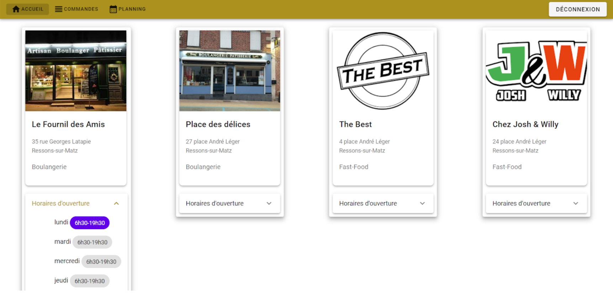
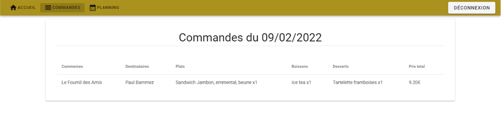

Répondre aux incidents et aux demandes d’assistance et d’évolution
Collecter, suivre et orienter des demandes
Lors de mon stage de 2 ème année chez FM LOGISTIC, une réunion avait été réalisée avec plusieurs
personnes de la plateforme afin de présenter le projet à tout le monde. Ceci a permit un échange
constructif permettant d'obtenir des suggestions ou demandes fonctionnels ou techniques sur
l'application.

Durant mon stage de 1 ère année aux Horloges Huchez, mon maitre de stage venait constater l'avancement
du travail réaliser et réexpliquer les potentiels points non compris et les objectifs finaux attendus
étant la réalisation du programme permettant de faire fonctionner le glas.
Traiter des demandes concernant les applications
Pendant mon stage chez FM LOGISTIC, suite aux demandes sur l'application, nous avons
implémenté certaines fonctionnalités comme la possibilité de voir toutes les commandes
du jour.
